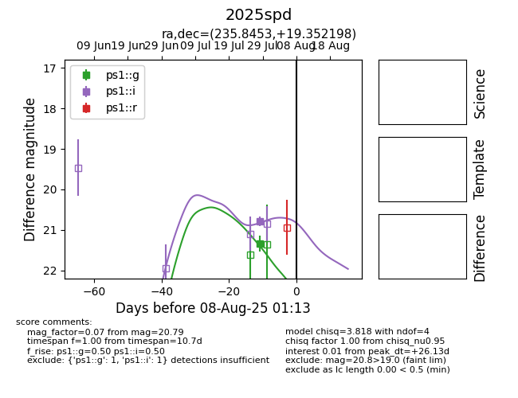

Target 2025spd at 2025-08-06 22:53, see:
YSE: ziggy.ucolick.org/yse/transient_detail/2025spd
alt names
2025spd (yse)
coordinates:
equatorial (ra, dec) = (235.8453,+19.35220)
galactic (l, b) = (31.1693,+49.93927)
photometry
last ps1::g=21.34, ps1::i=20.79
1 ps1::g, 1 ps1::i detections
